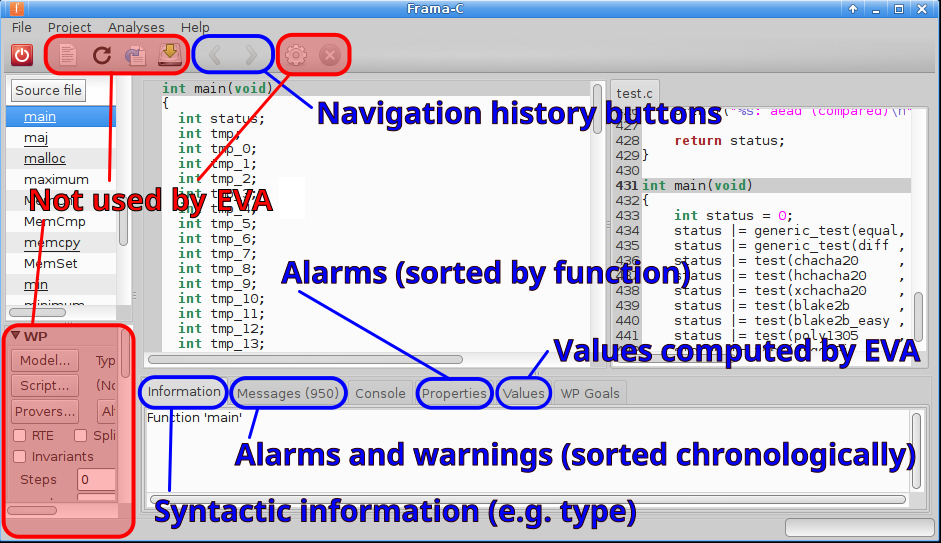

Static Analysis of Source Code
Table of Contents
Abstract: Analysis of Source Code without "running". Large amount of research exists on this topic. Several commercial/free tools exist. The techniques (i) generate abstract syntax trees of the source code, (ii) look for pattern matches that are known to be security wise problematic, (iii) either auto-fix or alert the programmer. This is not the same as an area known as "formal verification". Taking a broader view, we could make this fall under debugging.
1 Background
- ../Languages/Grammars, Derivation Trees, Abstract Syntax Trees. Required Reading.
- Most of the tools mentioned below use abstract syntax trees (AST).
- JetBrains has https://www.jetbrains.com/mps/concepts/.
- Eclipse Java development tools (JDT) Abstract Syntax Trees API.
- Formal verification is based on assertions, discrete mathematics, logic, and algorithmic theorem proving. Assertions in a well-defined math + logic based language + automatic theorem proving.
2 Static Analysis of Source Code
https://www.owasp.org/index.php/Static_Code_Analysis 2017 explains the following sections. Required Reading
- Data Flow Analysis
- Control Flow Graph
- Taint Analysis
- Lexical Analysis
- False Positives
- False Negatives
3 Well-known "Simple" Tools
- A small collection of tools is included here. These are widely known.
3.1 SPLINT
- http://splint.org/ Splint can analyze C source code for security vulnerabilities and coding mistakes, even without you providing assertions. It is for the C language only, not C++ or other languages.
3.2 CheckStyle
- https://checkstyle.org/ CheckStyle: Development tool to help programmers write Java code that adheres to a coding standard. It automates the process of checking Java code to spare humans of this boring (but important) task.
3.3 FindBugs
- SpotBugs/ FindBugs Tool. A bug pattern is a code idiom that is often an error.
- Difficult language features
- Misunderstood API methods
- Misunderstood invariants when code is maintain
- typos, wrong boolean operators, …
- Static analysis to inspect Java bytecode for bug patterns. Don't even need the program's source
- can report false warnings < 50%, and also miss real errors.
- Notes by Mateti, ../Debugging/FindBugs
- https://spotbugs.github.io/ SpotBugs is FindBugs' successor.
3.4 PMD
- PMD debugging plugin (for Eclipse and IdeaJ) for static analysis of security.
- Security Analysis with PMD Using the PMD debugging plugin (for Eclipse and IdeaJ) for static analysis of security. https://github.com/GDSSecurity/GDS-PMD-Security-Rules
- PMD parses Java source code and looks for potential problems like:
- Possible bugs - empty try/catch/finally/switch statements
- Dead code - unused local variables, parameters and private methods
- Suboptimal code - wasteful String/StringBuffer usage
- Overcomplicated expressions - unnecessary if statements, for loops that could be while loops
- Duplicate code - copied/pasted code means copied/pasted bugs
- PMD-CPD - Copy/Paste Detector (CPD)
3.4.1 PMD RuleSets
- Android Rules: These rules deal with the Android SDK.
- Basic Rules: The Basic Ruleset contains a collection of good practices which everyone should follow.
- Braces Rules: The Braces Ruleset contains a collection of braces rules.
- Clone Implementation Rules: The Clone Implementation ruleset contains a collection of rules that find questionable usages of the clone() method.
- Code Size Rules: The Code Size Ruleset contains a collection of rules that find code size related problems.
- Controversial Rules: The Controversial Ruleset contains rules that, for whatever reason, are considered controversial.
- Coupling Rules: These are rules which find instances of high or inappropriate coupling between objects and packages.
- Design Rules: The Design Ruleset contains a collection of rules that find questionable designs.
- Import Statement Rules: These rules deal with different problems that can occur with a class' import statements.
- JavaBean Rules: The JavaBeans Ruleset catches instances of bean rules not being followed.
- JUnit Rules: These rules deal with different problems that can occur with JUnit tests.
- Java Logging Rules: The Java Logging ruleset contains a collection of rules that find questionable usages of the logger.
- Migration Rules: Contains rules about migrating from one JDK version to another.
- Migration15: Contains rules for migrating to JDK 1.5
- Naming Rules: The Naming Ruleset contains a collection of rules about names - too long, too short, and so forth.
- Optimization Rules: These rules deal with different optimizations that generally apply to performance best practices.
- Strict Exception Rules: These rules provide some strict guidelines about throwing and catching exceptions.
- String and StringBuffer Rules: Problems that can occur with manipulation of the class String or StringBuffer.
- Security Code Guidelines: These rules check the security guidelines from Sun.
- Unused Code Rules: The Unused Code Ruleset contains a collection of rules that find unused code.
3.4.2 PMD Rule Examples
- EmptyCatchBlock: Empty Catch Block finds instances where an exception is caught, but not hing is done. In most circumstances, this swallows an exception which should either be acte d on or reported.
- EmptyIfStmt: Empty If Statement finds instances where a condition is checked but nothing is done about it.
- EmptyWhileStmt: Empty While Statement finds all instances where a while statement does nothing. If it is a timing loop, then you should use Thread.sleep() for it; if it's a while loop th at does a lot in the exit expression, rewrite it to make it clearer.
- EmptyTryBlock: Avoid empty try blocks - what's the point?
- EmptyFinallyBlock: Avoid empty finally blocks - these can be deleted.
- EmptySwitchStatements: Avoid empty switch statements.
- JumbledIncrementer: Avoid jumbled loop incrementers - it's usually a mistake, and it's conf using even if it's what's intended.
- ForLoopShouldBeWhileLoop: Some for loops can be simplified to while loops - this makes t hem more concise.
3.5 Slides on FindBugs and PMD
- ./findbugs-etc.pptx FindBugs, PMD, etc. Eclipse and IDEA Plugins. These are pmateti's slides. 2013.
4 Commercial Tools
- This list is obviously non-exhaustive.
4.1 Coverity
- http://www.coverity.com/ Stanford U research on static analysis commercialized. (i) Dawson Engeler, et al., A Few Billion Lines of Code Later: Using Static Analysis to Find Bugs in the Real World, CACM, 10pp, 2010. http://courses.cs.washington.edu/courses/cse484/14au/reading/coverity.pdf. Required Reading. (ii) http://go.coverity.com/rs/157-LQW-289/images/2014-Coverity-Scan-Report.pdf Required Reading.
- You can submit the source code of your project, and they will do a free report on it.
- Bought out by Synopsys in 2014.
4.2 SEMMLE
- https://semmle.com/ "Code as Data" "Semmle QL, is a declarative, object-oriented query language. It is a modern variant of Datalog. Unbounded ability to ask questions of code repos: Find all instances of a security vulnerability; Check correct usage of an API" https://semmle.com/wp-content/uploads/2016/01/paper.pdf
4.3 KlocWork
- http://www.klocwork.com/ "Code Matters." "Detect security, safety, and reliability issues as you type." "Through complete program analysis of syntax, semantics, variable estimation, and control and data flow, static code analysis finds issues that are difficult or impossible to find through manual testing. That’s because SCA is based on application structure and data, covering a much broader set of scenarios than a developer ever could. Klocwork takes static code analysis to the next level – making it happen on-the-fly."
5 Advanced Tools
These tools need an advance graduate level course before they can be effectively used.
5.1 Spoon
- http://spoon.gforge.inria.fr Spoon, v7, 2018. Source Code Analysis and Transformation for Java. FOSS.
- Jifeng Xuan, Matias Martinez, Favio Demarco, Maxime Clément, Sebastian Lamelas, et al.. "Nopol: Automatic Repair of Conditional Statement Bugs in Java Programs." IEEE Transactions on Software Engineering, 2017, 43 (1), pp.34-55. Reference.
- Renaud Pawlak, Martin Monperrus, Nicolas Petitprez, Carlos Noguera, Lionel Seinturier. "Spoon: A Library for Implementing Analyses and Transformations of Java Source Code". In Software: Practice and Experience, Wiley-Blackwell, 2015. Doi: 10.1002/spe.2346. Reference.
5.2 JTransformer
- https://sewiki.iai.uni-bonn.de/research/jtransformer/ "JTransformer lets you analyse and transform the full source code of a Java project (even the comments). … Source code edits are propagated automatically and incrementally to the internal model of the program. Transformations of the internal model are propagated to the source code upon explicit request. Thus model transformation is reflected as source-code transformation at the push of a button."
5.3 Net Beans, Eclipse, IdeaJ Plugins
- RefactoringNG for Net Beans
- JTransformer has a plugin for Eclipse.
- More TBD
6 Formal Verification Tools
6.1 Automated Theorem Proving
- The words theorem and proof are being used here just as you had learnt in college mathematics.
- Automated Theorem Proving is about the following. Given a logical statement S, either discover a computer-generated proof of it or show why it is not valid.
- https://en.wikipedia.org/wiki/Automated_theorem_proving
6.2 Frama-C

Figure 1: framac-gui-annotated
- http://frama-c.com/ FOSS.
For C only.Not C+. Precise analyses despite the pitfalls of C. Formal Verification Tool. Proving formal properties for critical software. - Ready to install in Ubuntu.
apt install framacMany plugins. - E-ACSL Executable ANSI/ISO C Specification Language, 2016.
- C++ Support "04 July 2016 The first version of the Frama-Clang plugin, an experimental C++ front-end for Frama-C, is available."
- http://blog.frama-c.com/ Parsing realistic code bases with Frama-C July 2018.
6.3 Java Checker Framework
- Java https://checkerframework.org/ Framework, U of Washington. FOSS. Formal Verification Tool. https://checkerframework.org/manual/ 250pp manual.
- http://eisop.uwaterloo.ca/live/#mode=edit Checker Framework Live Demo
- Example use: detecting a null pointer bug
- Download the distribution: https://checkerframework.org/checker-framework-2.5.3.zip
6.4 Kestrel Specware
- http://www.specware.org/ for Java at Kestrel Institute, Palo Alto, CA 94304. Formal Verification Tool. Specware is a next-generation environment supporting the design, development and automated synthesis of scalable, correct-by-construction software. Specware is a leading-edge automated software development system that allows users to precisely specify the desired functionality of their applications and to generate provably correct code based on these requirements. At the core of the design process in Specware lies stepwise refinement, in which users begin with a simple, abstract model of their problem and iteratively refine this model until it uniquely and concretely describes their application.
- http://www.specware.org/release-notes-4-2-13.html
6.5 Model Checking
- SPIN
- Bharat Jayaraman, Slides.
- Notes by Prabhaker Mateti, ../ModelChecking
- JPF is an extensible software model checking framework for Java bytecode programs. The system was developed at the NASA Ames Research Center, open sourced in 2005, and is freely available at https://github.com/javapathfinder
7 Security Improvement through Static Analysis
- OWASP 35+ slides based on "Secure Programming with Static Analysis" 2008 book. https://www.owasp.org/index.php/Static_Code_Analysis. Lecture.
- Secure Programming: Code Review and Static Analysis, 40+ slides, David Aspinall, University of Edinburgh, Scotland, 2016. Lecture.
- Notes by Prabhaker Mateti, ../../SecureProg.
8 References
- Several Required Readings are embedded above.
- https://www.owasp.org/index.php/Static_Code_Analysis 2017 Required Reading
- Caitlin Sadowski, Jeffrey van Gogh, Ciera Jaspan, Emma Söderberg, Google, Inc., Collin Winter, Tricorder: Building a Program Analysis Ecosystem, 2015 IEEE/ACM 37th IEEE International Conference on Software Engineering (ICSE), 2015. Recommended Reading.
- Brown, Fraser, Andres Nötzli, and Dawson Engler. "How to Build Static Checking Systems Using Orders of Magnitude Less Code", Proceedings of the Twenty-First International Conference on Architectural Support for Programming Languages and Operating Systems. ACM, 2016. PDF Recommended Reading.
- Annual conferences: PASTE Program Analysis for Software Tools and Engineering 2011+ Reference.